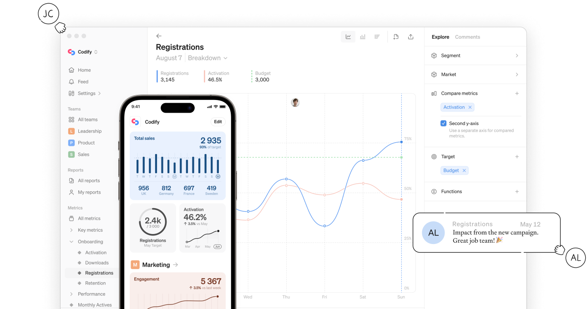
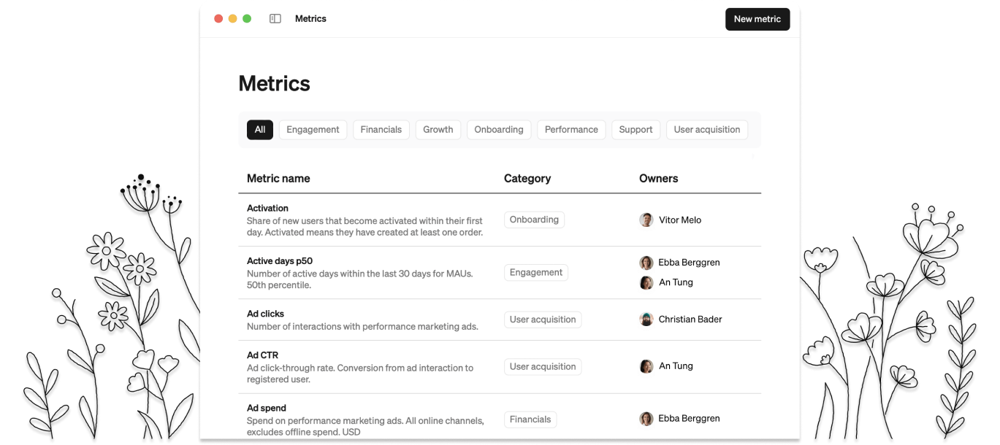
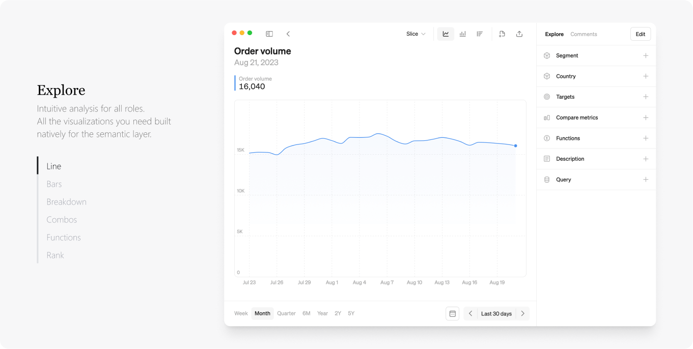

Make sense common
Steep is a modern analytics platform powered by metrics that changes how companies use data together.
Steep in 60 seconds
Learn about Steep and how it can change the way your organization works with data.
Join the semantic movement
Steep supports the latest semantic API:s from dbt and Cube.
A BI system for the whole organization
All your metrics in one place with the semantic layer
Define once, use everywhere
Build a system where all visualizations are powered by centralized definitions. No more repeating yourself.
Create a common language
Document and organize all your metrics. Create one place where everyone can go to explore and consume metrics.

Analysis made for everyone
Explore metrics directly. Go deeper with multi-layered analysis.
All roles can play
Make it easy for anyone to analyse using metrics - no SQL or training needed. Help any team to answer their own questions.
Easy for everyone Deep for experts
With multi-layered analysis, experts get to insights faster. Combine metrics, drill down and overlay functions.